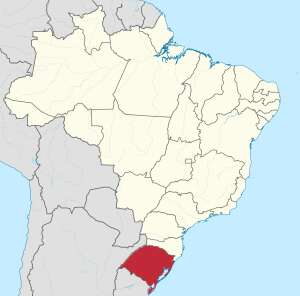
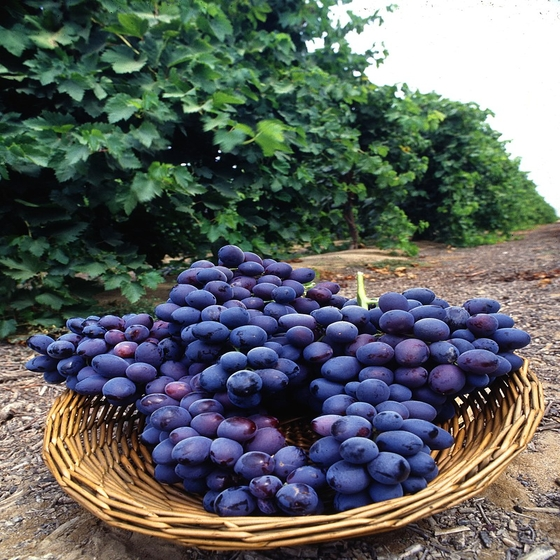
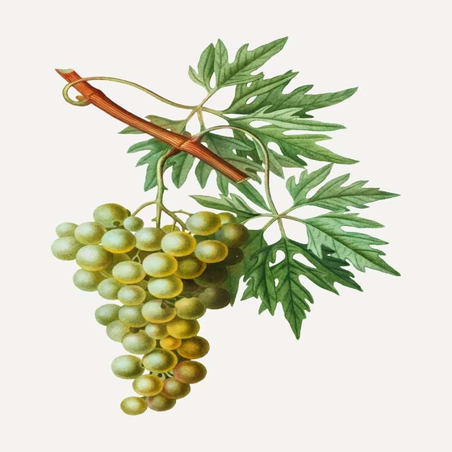

Brasil
No Brasil o cultivo da videira começou em 1535, na Capitania de São Vicente trazida pelos portugueses. A imigração italiana em São Paulo e na Região Sul do Brasil no final do século XIX deu um grande impulso à cultura. São Paulo, Paraná, Rio Grande do Sul, Santa Catarina, Pernambuco e Bahia são grandes produtores. As melhores épocas de produção variam com as características climáticas de cada região.
No Entreposto Terminal de São Paulo da CEAGESP predominam as uvas originárias do estado de São Paulo das regiões de Botucatu, Campinas, Itapetininga e Sorocaba, no período de novembro a março, e de Dracena e Jales de julho a novembro. O Estado do Paraná é o maior fornecedor nacional de julho a novembro, uma janela de mercado onde entram poucos fornecedores. O Nordeste do Brasil concentra a sua oferta de agosto a dezembro.
A uva é uma das frutas mais exportadas e também uma das mais importadas pelo Brasil. Uvas chilenas, americanas, argentinas têm no Brasil um mercado cada vez maior. A Câmara Setorial de Frutas, órgão da Secretaria da Agricultura e Abastecimento do Estado de São Paulo apresenta as normas de Classificação da Uva (Vitis vinifera L.).
História
O cultivo da uva começou cerca de 6.000 a 8.000 anos atrás, no Oriente Médio. A levedura, um dos primeiros microorganismos conhecidos pelo homem, ocorre naturalmente na casca das uvas, levando a produção de bebidas alcoólicas, como o vinho. Os primeiros vestígios de vinho tinto são vistos na Armênia antiga, onde foi encontrada a adega mais antiga do mundo, datando de cerca de 4.000 a.C.. Por volta do Século IX, a cidade de Xiraz era conhecido por produzir um dos melhores vinhos do Oriente Médio. Assim, tem sido proposto que o nome do vinho tinto de Syrah possui origens em Xiraz, uma cidade na Pérsia, onde a uva foi usada para fazer vinho Shirazi. Hieróglifos no Antigo Egito recordam o cultivo de uvas, e a história atesta também que povos antigos da Grécia, Fenícia e Roma também cultivavam uvas para a alimentação e produção de vinho. Mais tarde, o cultivo de uvas se espalhou pela Europa, norte da África e, finalmente, América do Norte. Uvas pertencentes ao gênero Vitis proliferaram naturalmente nas selvas da América do Norte, e foram parte da dieta de muitos nativos americanos, mas foram considerados pelos colonizadores europeus como impróprio para a produção de vinho.
Religiosidade
Na Bíblia, as uvas são mencionadas pela primeira vez quando Noé cultiva-os em sua fazenda (Gênesis 9:20-21). Referências sobre o vinho são feitas no livro de Provérbios (20:1) e no livro de Isaías (5:1-25). Deuteronômio (18:3-5, 14:22-27, 16:13-15) relata o uso do vinho durante festas judaicas. Uvas também foram significativas para ambos gregos e romanos, e seu deus da agricultura, Dionísio, estava ligado às uvas e do vinho, sendo freqüentemente retratado com folhas de uva em sua cabeça.As uvas são especialmente simbólicas para os cristãos, que desde o início da Igreja faz o uso do vinho na celebração da Eucaristia.Pontos de vista sobre o significado do vinho variam entre denominações. Na arte cristã, muitas vezes as uvas representam o sangue de Cristo.
